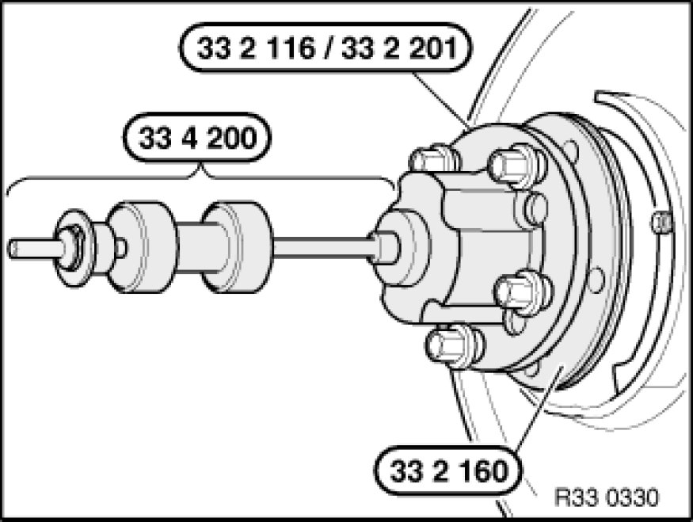

Replacing Bearing for Front Wheel
31 21 180 - Replacing bearing for front wheel

Special tools required:
- 22 1 018 Tools and Equipment
- 31 2 113 31 2 110 Fixture
- 33 1 367 33 1 360 Fixture
- 33 2 116 33 2 110 Removal and Installation Tool
- 33 2 160 33 2 160 Spacer Ring
- 33 2 201 33 2 200 Fixture
- 33 3 261
- 33 3 266 33 3 260 Set of Tools
- 33 3 268 33 3 260 Set of Tools
- 33 4 036 33 4 030 Set of Tools
- 33 4 200 33 4 200 Tool Kit / Striker Fixture
- 33 4 261 33 4 260 Set of Tools

Important!
Bearing cannot be dismantled.
Do not wash out bearing.

Remove front wheel Removing or Installing Front or Rear Wheel.
Important!
Expand turning lock sufficiently to avoid damaging thread when releasing collar nut.
Release collar nut; to do so, press brake pedal to floor.
Remove front brake disc Removing and Installing/Replacing Both Front Brake Discs

Force drive flange with special tools 33 2 116 33 2 110 Removal and Installation Tool / 33 2 201 33 2 200 Fixture, 33 2 160 33 2 160 Spacer Ring, 33 4 200 33 4 200 Tool Kit / Striker Fixture and 5 wheel bolts out of wheel bearing.
Note:
Rounded inside edge of special tool 33 2 160 33 2 160 Spacer Ring must point to drive flange.
Detach wheel bearing inner race from drive flange.

Remove swivel bearing Removing and Installing/Replacing Left or Right Swivel Bearing and clamp with aluminium clamping jaws in vice.
Important!
The bearing is destroyed when the drive flange is removed and must not be reused!
Lift out retaining ring (1).
Pull out bearing with special tools 31 2 113 31 2 110 Fixture, 33 4 261 33 4 260 Set of Tools, 33 4 036 33 4 030 Set of Tools and 33 3 261.
Note:
The bearing can be forced out of the swivel bearing on a press.
Check dust sleeve, replace if necessary.
Important!
Keep press-fit areas clean and free of oil and grease.
Wider chamfer of bearing must point to swivel bearing!

Clean press-fit area of new bearing.
Clean bearing seat in swivel bearing.
Important!
Wider chamfer (1) of bearing must point to swivel bearing!
Align bearing by way of wider chamfer to swivel bearing and draw in with special tools 31 2 113 31 2 110 Fixture, 22 1 018 Tools and Equipment, 33 1 367 33 1 360 Fixture and 33 3 261.
Note:
The bearing can be forced out of the swivel bearing on a press.
Install new circlip (1).
Note:
Make sure circlip (1) is correctly seated.
Draw in drive flange (1) with special tools 31 2 113 31 2 110 Fixture, 33 3 268 33 3 260 Set of Tools, 33 3 266 33 3 260 Set of Tools and 33 3 261.
Install swivel bearing Removing and Installing/Replacing Left or Right Swivel Bearing.
Draw output shaft into drive flange Pressing Output Shaft Out of Drive Flange (Wheel Hub) and Drawing In.
Install front brake disc Removing and Installing/Replacing Both Front Brake Discs.
Install front brake calliper Removing and Installing/Replacing Left or Right Front Brake Caliper.
Replace collar nut, oil collar nut/wheel bearing contact surface lightly and tighten down.
No oil permitted on thread of shaft journal or collar nut.
Tightening torque 31 21 2AZ Front Axle.
Secure collar nut by positive peening on flat areas of output shaft.
Install front wheel Removing or Installing Front or Rear Wheel.